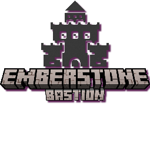
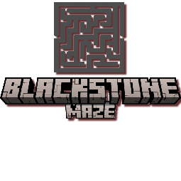
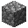

搜索结果
输入时只更新本列表，不会隐藏正文、也不会滚动页面。点击标题跳转到对应条目。
没有找到匹配的条目。可尝试「莫贝克斯」「符文」「药水」「首领」等关键词。
墓石地牢
Gravestone Dungeons 1.7 · ZaccMaster & HeadBodyScript · pack id gd_dp
本文为数据包 Gravestone Dungeons 1.7 的中文百科。数值与机制取自数据包源文件（function / recipe / advancement / loot_table / structure NBT）。
剑光交错，暗影翻涌。地牢遍布各生物群系与维度：试炼刷怪笼、自定义首领、附魔之刃、奥术遗物与不可合成的元素工具构成核心玩法。舞台中心是暗木要塞——以银币与金币结算的商旅枢纽。
本页在官方 Wiki 基础上，按数据包 1.7 源文件补全并校正了大量数值。若游戏内资源包汉化与此处不一致，以资源包为准。
玩家默认参数
| 初始最大魔力 | 2000 |
| 最大魔力上限 | 20000（符文可堆至） |
| 最大同伴数 | 1 → 最多 3 |
| 符文属性上限 | 见 符文 |
| 货币 | 银币 96 堆叠 · 金币 96 堆叠 |
魔力（Magicka）
- 初始最大魔力 2000，符文可堆至 20000。
- 再生：食物等级 ≥8 时 +1/tick（20/秒）；有魔力加速时额外 +1 → +2/tick（40/秒）。
- 加速来源：奥术节点被动（约 60s）、祝福
an_mag（代码 72000t≈60 分）、满级魔力+节点、药水（1/2/4/8 分）、骏马套装等。
- 满月会几乎清空魔力加速；技能附魔可返还 25% 已耗魔力。
- 量表条（自定义字体）同时显示魔力、加速、技能 CD 与 8 种油/叠层充能。
技能 / 套装魔力一览
| 消耗 | 来源 |
|---|
| 200 | 念力、紫颂虚空、丝线投掷、地居者套装 |
| 400–800 | 星之碎片单发、烈焰爆裂、烈焰鞘翅 |
| 1000–2000 | 唤骨/照明/巨剑；偏转/尖牙/落雷/光波/切腹；紫水晶套装、守卫套装 |
| 4000 | 缴械 |
| 600 | 犰狳套装 |
| 8000 | 流星雨、繁育仪式（CD 20 分钟） |
| 16000 | 虚空之球、破雾者维度传送 |
能量槽 / 充能附魔
部分附魔靠命中叠层或格挡充能（见 附魔）。反击脉冲需格挡 100 次后潜行蓄力释放。
不祥试炼（Ominous）
- 携带不祥进入地牢时，试炼刷怪笼敌人强化，奖励提高；可能携带数据包附魔。
- 不祥战利品表区分主世界 / 下界 / Boss 变体。
建筑结构
进入结构后常被切换为冒险模式，离开还原生存模式。多数结构可向 埃尔德丽德 或制图师购买探索地图；地图盒以木盒 / 灵柩命名，内含对应结构地图。

余烬石堡垒
主世界海洋上空 ·
莫贝克斯 · start_height +125

黑石迷宫
下界 · 炽焰恶魔 · 进度「下面还有更多」
| 结构 | 配置高度 start_height | 投影 | 生物群系 tag | 关联首领 |
|---|
暗木要塞 gd:direwood |
+17 |
WORLD_SURFACE |
direwood_biome：平原/森林/丛林/沼泽等温带系 |
商人枢纽 |
余烬石堡垒 gd:netherrock |
+125（高空） |
WORLD_SURFACE |
netherrock_biome：仅主世界河流 / 冻洋 / 暖海（不是下界维度） |
莫贝克斯 |
高峰修道院 gd:church |
−5 |
WORLD_SURFACE |
church_biome：雪原/针叶林等寒冷 + 平原/森林/橡木林等温带 |
格里姆加 |
云游氏族 gd:cloud_nomads |
+140（高空） |
WORLD_SURFACE |
cloud_nomads_biome：极广（寒冷/温带/丛林/草原/沙漠/河流与部分海洋等） |
三派系首领 |
泥湾蔓生洞穴 gd:m_caves |
+41 |
WORLD_SURFACE |
m_caves_biome：暗林/沼泽/红树林/丛林/稀疏丛林/热带草原（无普通平原） |
枯萎骨髓 |
灰石矿场 gd:mineshaft_temp |
−65 ～ −85（uniform） |
WORLD_SURFACE |
temp：温带/丛林/草原/沼泽等 |
育母之喉 |
黑石迷宫 gd:maze |
−51 |
WORLD_SURFACE |
maze_biome：仅 nether_wastes 下界荒地 |
炽焰恶魔 |
黑井墓穴 gd:catacombs |
−72（深地下） |
WORLD_SURFACE |
catacombs_biome：平原/森林/丛林/沼泽等温带系 |
暗影 |
女巫小屋 gd:witch |
−14 |
WORLD_SURFACE |
witch_biome：平原/森林/黑森林/沼泽等温带 |
水晶女巫会 |
埃丁伯勒集市 gd:fair |
−13 |
WORLD_SURFACE |
fair_biome：寒冷（雪原/针叶林/冰封）+ 温带（平原/森林/橡木林等） |
竞技场（门票触发） |
高度读法（来自 data/gd/worldgen/structure/*.json）：
表中数值为数据包 start_height.absolute（矿场为 uniform −65～−85）。上列结构均设置
project_start_to_heightmap: WORLD_SURFACE，在游戏内生成高度约等于该维度地表高度 + 配置值，不是固定世界坐标的绝对 Y。
余烬石堡垒生物群系为主世界海洋/河流（剧情为被撕入主世界天空）；黑石迷宫才是下界结构。
奥术节点/商人等 POI：温带 temps −26 / templ −33，寒冷 colds −26 / coldl −33，炎热 hots −26 / hotl −33（均 WORLD_SURFACE）。
| 结构集 | 成员 | spacing / separation |
|---|
l_dungeon | 教堂、泥湾洞穴、暗木要塞、余烬石堡垒、黑井墓穴（不含矿场/迷宫/集市/女巫/云游） | 90 / 60 |
cloud_nomads | 云游氏族 | 120 / 80 |
fair | 埃丁伯勒集市 | 80 / 50 |
l_dungeon_nether | 黑石迷宫 | 80 / 40 |
mineshaft_temp | 灰石矿场 | 40 / 20 |
witch | 女巫小屋 | 40 / 20 |
角色与交易
银币=铁粒 · 金币=金粒 · 1 金 = 96 银（法恩迪尔兑换）
多数村民有多套随机货架（reload 后切换）。下表列出数据包中出现的主要商品与标价（银=银币，金=金币）。
暗木要塞
| NPC | 主要商品 |
|---|
法恩迪尔
行政官 |
货币兑换：1 金 → 96 银；96 银 → 1 金。
回收灵魂之泪：次级 2 金 · 普通 6 金 · 高级 10 金 · 远古 14 金 |
伊森伯特
杂物收购 |
回收饰品与生物皮革：山羊皮 2 银、红/棕哞菇皮 3–4 银、狐/白狐皮 8–10 银、熊猫皮 20 银、嗅探兽皮 25 银、北极熊皮 1 金 |
扎卡里乌斯修士
图书馆 |
收购附魔书；出售奥术魔法书等；符文：强健之石 / 魔力之石 / 减伤坠落 / 悠长呼吸 / 更高交互距离 / 同伴之石（多为 2 金）；部分货架含附魔书（箭袋、岩浆行者、跃迁一击、照明、弹射物偏转、巨剑术防御、唤骨术、缴械等） |
阿拉里克
宫廷法师 |
收购各类头颅；出售：特殊箭矢（变形/催眠/冲击波等 3 银 8 支）、传送法术书（24 银）、一次性领域法术（雷霆/力场等 24 银）、雷系同伴召唤、烈焰爆裂附魔书（2 金，魔力 800/次）、次级电击喷溅药水、附魔金苹果等 |
炼金师 / 莱拉
炼金 |
收购炼金材料；出售鱼油（3 银）、各档武器油 / 护甲油（见 武器油）；部分货架含丰沛级药水 |
酿酒师
菲奥娜相关 |
出售次级/正式/丰沛药水（蛮牛、耐力等）；龙息 6 银；附魔之瓶 3 银 8 个 |
厨师
菲奥娜 |
收购生肉；出售蜂蜜酒、各炖菜（约 6 银） |
| 制箭师拉格纳 |
出售弩（低/中/高耐久）、特殊箭（眩晕/剧毒/漂浮/凋零/织网）、大量普通箭；收购羽毛、紫水晶、金属 |
| 铁匠 / 护甲匠 / 工具匠 |
命名武器护甲工具（匕首、刺剑、阔剑、晨星锤、破岩者套装、各类镐斧铲锄）；强化工具：磨刀石（武器）、锻造锤（盾/鞘翅盔甲）、锻造钳（工具）、制箭师的锉刀（弓弩）——多为 1 金 |
| 竞技场主人 |
竞技场门票：64 银 ·「副手持票进入竞技场开始战斗」 |
| 马贩哈兰 |
皮革/竞速马鞍、轻型/钢制/重型马铠、多种命名马匹（法拉贝拉矮马、安达卢西亚、比利时温血/挽马、诺曼矮马、冰岛矮马、阿拉伯马、利皮扎马、弗里斯兰马等） |
| 养蜂人 / 农夫 / 猎犬师 |
蜂箱、特制蜂蜜；始祖动物、耕种附魔书（48 银）；战狼（斯卡恩/诺克斯/荆棘/米什卡/獠牙/雅加/莫罗兹等，含活力耐力力量与能力标签）、嚎叫者烈酒、狼铠 |
| 吟游诗人塞德里克 |
音乐唱片（16 银）与签名纸条 |
云游氏族（奥多 / 伊莎贝尔 / 杰罗姆）
- 符文：强健之石、魔力之石、减伤坠落、更高交互距离、同伴之石等，约 2 金
- 元素同伴召唤法术（一次性）：烈焰/寒霜/剧毒系狂暴傀儡（1 金）、对应剑守卫 / 弓守卫（48 银）
- 鞘翅：迷彩 / 烈焰 / 薄如蝉翼的鞘翅（48 金；烈焰鞘翅潜行激活，魔力 800/次）
- 极强力烟花火箭（飞行时间×3，12 银 12 支）、各色蛙明灯、陶片
- 烈焰爆裂附魔书（2 金）；稀有战狼与弩手/女巫召唤（见阿拉里克货架）
游商（埃丁伯勒 / 弗兰德系统）
用铜锭购买盲盒木箱：箭矢箱、马具与要塞地图箱、酒食箱、武器强化工具箱、始祖动物箱等。
首领
通用机制
- 进入首领房触发；同地牢玩家被传送进房。玩家离场、死亡或首领死亡则结束。
- 和平模式不触发；属性随难度与房内玩家数缩放。
- Boss 血条由
gd_main:init 注册；击杀后发放对应档位经验（见下）。
| 首领 | 难度 | HP
简单/普通/困难 | 基底 | 阶段 | 经验* | 要点 / 掉落 |
|---|
| 竞技场挑战者 | 简单 | 100 / 200 / 400 | 随机 10 种 | — | 普通 | 副手竞技场门票（亚瑟处 64 银×3）；击杀仅给经验，无固定战利品 |
| 水晶女巫会 | 中等 | 200 / 300 / 500 | 女巫×3 随机 1/3 | 2 | 强敌 | 凯达娅（水晶+3 交互）/ 玛丽菲卡娅（重力−0.07）/ 西尔瓦娜娅（挖掘效率+1）；桶→witch_loot；普通灵魂之泪 |
| 育母之喉 | 困难 | 200 / 300 / 500 | 蜘蛛 scale 2.5 | 2 | 强敌 | 铁剑剧毒+击退；掉落吐丝器弩（织网枪，耐久 965，安全坠落+15）+ 丝腺桶 + 普通泪 |
| 格里姆加 | 困难 | 300 / 400 / 600 | 唤魔者 +3 图腾 | 6 | 大敌 | 亡灵大军→死亡领主→本体；掉落亡灵法师面具（盔甲+10）、炼金袋（唤魔者尖牙）、高级泪；解锁僧侣纪尧姆 |
| 枯萎骨髓 | 困难 | 300 / 400 / 600 | 凋灵骷髅+盾 | 4 | 大敌 | 灵魂灯场；精英守卫（赫拉夫尼尔/比约恩/贡纳尔/西格伦）；掉落至爱（凋零玫瑰·流血）、钱袋、高级泪；解锁塞德里克唱片商 |
| 暗影 | 困难 | 300 / 400 / 600 | 凋灵骷髅 | 2 | 大敌 | 夜间瞬伤、雷雨抗性、浮冰场地；掉落暗影刃（钻石剑耐久 3561，+24 伤害，内蕴回响）、袋子（霜冻油）、高级泪 |
| 炽焰恶魔 | 极限 | 400 / 500 / 700 | 烈焰人 | 2 | 传说 | 16 向火浪 10 燃烧伤、岩浆怪、刷怪笼；掉落发光棒（火焰附加 8、燃烧时间−1）、宝藏桶（流星雨）、远古泪 |
| 莫贝克斯 | 极限 | 400 / 500 / 700 | 幻术师 | 2 | 传说 | 任务链后决战；掉落戒指、袋子（虚空之球）、远古泪 |
* 经验函数召唤 15 枚经验球/次：普通 90×15=1350；强敌 180×15=2700；大敌 360×15=5400；传说 720×15=10800。
灵魂之泪（Boss 通用掉落）
Lore：「蕴含着一名倒下敌人的灵魂。」基底为恶魂之泪，带消失/绑定诅咒，可堆叠 16。法恩迪尔高价回收：
| 品级 | 颜色 | 数据 | 回收价 | 主要来源 |
|---|
| 次级灵魂之泪 | #94DBFF | boss_lvl_1 | 2 金 | 低阶 / 部分战利品 |
| 普通灵魂之泪 | #ACFF30 | boss_lvl_2 | 6 金 | 女巫会、育母之喉 |
| 高级灵魂之泪 | #9940FF | boss_lvl_3 | 10 金 | 格里姆加、枯萎骨髓、暗影 |
| 远古灵魂之泪 | #BA1806 | boss_lvl_4 | 14 金 | 炽焰恶魔、莫贝克斯 |
全部带绑定诅咒，堆叠上限 16，lore「蕴含着一名倒下敌人的灵魂。」
经验值档位（脚本 · 15 球/次）
- 普通敌人：90×15 ≈ 1350 XP（竞技场）
- 强敌：180×15 ≈ 2700 XP（女巫会、育母之喉）
- 大敌：360×15 ≈ 5400 XP（格里姆加、枯萎骨髓、暗影）
- 传说敌人：720×15 ≈ 10800 XP（炽焰恶魔、莫贝克斯）
虚空行者莫贝克斯
Morbex the Voidwalker
虚空行者莫贝克斯
| 难度 | 极限 |
| 基底 | 幻术师 Illusioner |
| 生命值 | 简单 400 / 普通 500 / 困难 700 |
| 攻击冷却 | 约 250 / 230 / 210 tick |
| 血条 | 紫色 notched_20 |
| 音乐 | devouring_serpent_morbex |
| 结构 | gd:netherrock · 主世界海洋上空 · start_height +125 · 投影 WORLD_SURFACE |
| 进度链 | 失而复得 → 让他重回正轨 → 悲剧命运 |
传说莫贝克斯以咒语将整座余烬石堡垒从下界撕入主世界天空。其后被囚禁，灵魂拆成三份藏进堡垒房间。
召唤方法
- 抵达余烬石堡垒
拼图结构（剧情为被撕入主世界天空），起始池 gd:netherrock_start，size 7；数据包 start_height.absolute = 125，project_start_to_heightmap = WORLD_SURFACE，生成于主世界河流/冻洋/暖海上空（约地表 +125，非固定绝对 Y=125）。地图：埃尔德丽德「华饰余烬石盒」或制图师同名盒。进入解锁进度「失而复得」。
- 在祭坛房对话
祭坛/囚禁房模板 netherrock_15：特征为黑色混凝土、讲台、加固深板岩一带。靠近约 8 格触发随机对话（灵魂被拆成三份、带到祭坛合而为一）。
- 收集三枚灵魂碎片
均在固定结构模板的容器中，基底石英 + 附魔光效 + 自定义数据，详见下表。
- 返回祭坛启动仪式
同一玩家背包/快捷栏同时持有三枚且距祭坛约 5 格内 → 系统清除碎片并进入阶段一：「你找到它们了！我自由了！！！！」三枚石英残影汇入祭坛后开打。曾成功解锁后，约 8.5 格内可免碎片再触发。
灵魂碎片获取（按 NBT）
| 碎片 | 标识 / 颜色 | 模板 | 房间特征 | 同容器 |
|---|
| 其一 |
morbex_1
#FFCC00 |
netherrock_2 |
工坊/起居：酿造台、末影箱、炼药锅、紫水晶芽、灵魂灯、磨制黑石 |
金锭 |
| 其二 |
morbex_2
#0066FF |
netherrock_16 |
书库：讲台 + 《莫贝克斯的笔记》（morbex_journal）、雕纹书架、灵魂火、金块 |
铁锭 |
| 其三 |
morbex_3
#FF3300 |
netherrock_17 |
储藏厅：讲台、雕纹书架、多箱/桶、紫玻璃、绯红木板、下界疣 |
铜锭 |
- 在容器中看到与金属锭同格、带附魔光效的石英即为碎片；普通下界石英矿石不可用。
- 任意一枚即解锁进度「让他重回正轨」（磁石图标，+50 XP）。
- 拼图随机拼接：若本次生成缺模板，需换实例或扩大搜索。相关房间常伴有箭矢/药水/食物战利品。
- 同一建筑群另见
netherrock_18：可能有破雾者附魔书、末影水晶、肋甲纹饰模板等。
战斗与技能
阶段一为释放与剧情（三石英汇聚），阶段二攻击循环。血条紫色；撤离/团灭重置。
| 技能 | 说明 |
|---|
| 虚空之球 | 大型黑洞，吸引挤压附近实体；烟雾 + 幽匿灵魂粒子；碰撞伤害 |
| 虚空弹 / 箭 | 远程投射物 |
| 虚空之环 / 戏法 / 传送 | 范围与位移干扰 |
| 召唤 / 猪灵 | 随从干扰 |
| 药水术 0–3 | 多阶段药水投掷 |
| 漂浮 | 祭坛区域上升气流 |
莫贝克斯：他们用诅咒法术把我的灵魂分成三份，藏在了这块岩石上的某处。
莫贝克斯：只要它们没有在这个祭坛上合而为一，我就无法解脱。
莫贝克斯：你找到它们了！我自由了！！！！
莫贝克斯：你这蠢货！我的宝藏概不外借！
莫贝克斯：不可能！你这只臭老鼠怎么可能打败我！？
玩家：这是什么？一枚戒指。他的戒指！如果我……会发生什么？
战利品
- 莫贝克斯的戒指（绿宝石，消失诅咒）：主手 +12 伤害、体型放大、台阶/跳跃/移速提升；副手为相反修正（可缩小）。Lore：铁证：虚空行者已被击败。
- 莫贝克斯的袋子：木桶，战利品表含虚空之球附魔书（狼牙棒用，魔力 16000/次）、典籍、符文、药水、特殊箭矢等
- 远古灵魂之泪 · 传说敌人经验
敌人与试炼
各地牢由试炼刷怪笼生成特色敌人，通关发放战利品。不祥效果下强化难度与奖励；敌人可能携带数据包附魔。经验按敌档发放（见 首领）。
附魔
机制分被动、主动（消耗魔力）、能量槽（命中叠层/格挡充能）。下列魔力数值优先采自游戏内附魔书 Lore（图书馆 / 云游货架）。
主动附魔：魔力与冷却
| 附魔 | 魔力 | 冷却 | 要点 |
|---|
| 念力 / 紫颂虚空 / 丝线投掷 | 200 | 20t / — | 拉取掉落物；潜行射末影箭 / 织网·蜘蛛箭 |
| 星之碎片 | 400 / 2000 | 30t / 120t | 单发 4/14 伤；潜行五连发 |
| 烈焰爆裂 | 800 | 250t | 举盾潜行蓄力；三段火伤+点燃 |
| 唤骨术 / 照明 / 巨剑术防御 | 1000 | 140 / 100 / 40t | 3–7 把飞剑可齐射 |
| 偏转 / 尖牙 / 落雷 / 光之波 / 切腹 | 2000 | 见附魔一览 | 落雷需见天；切腹自损 18 伤 |
| 缴械 | 4000 | 100t | 夺走目标主手 |
| 流星雨 | 8000 | 1600t | 约 11 枚流星×10 伤 |
| 虚空之球 / 破雾者 | 16000 | 1200 / 600t | 黑洞吸入；跨维度传送 |
叠层阈值：普通生物 3 层 / Boss·玩家 10 层爆发；圣化对亡灵 3 层。附魔可返还 25% 已耗魔力。右键附魔：副手举盾+潜行。
附魔书稀有度（地牢宝箱）
- 不常见：箭袋、经验增幅、照明、跃迁一击、念力、耕种、熔炼之触
- 稀有：流血、岩浆行者、飞刀袋、烈焰爆裂、偏转、紫颂虚空、巨剑术、引雷、悬赏追讨、海生
- 史诗：唤骨术、火舌、缴械、尖牙、星之碎片、反击脉冲、切腹、黑刺箭、落雷
- 传说：流星雨（恶魔）、虚空之球（莫贝克斯）、光之波、破雾者
附魔一览
| 名称 | 类型 | 效果（综合数据包） | 互斥 | 最高等级 | 适用 |
|---|
| 经验增幅 | 被动 | 生物/方块经验 ×(1.5+0.75/级) | 内蕴回响 | 3 | 近战+远程 |
| 内蕴回响 | 被动+主动 | 命中触发；经验 ×1.5；神秘语音 | 经验增幅、横扫 | 1 | 剑 |
| 引雷 | 被动 | 可见天空时约 33% 召唤闪电；抗性短暂提升 | 弓系组 | 3 | 弓/锤 |
| 熔炼之触 | 被动 | 矿石→锭、原木→木炭；方块经验 0 | 精准采集 | 1 | 挖掘工具 |
| 耕种 | 被动 | 自动收获并播种 | 主动组 | 1 | 锄 |
| 悬赏追讨 | 被动 | 提高袭击生物银币掉落 | — | 1 | 利器 |
| 紫颂虚空 / 火舌 / 黑刺箭 / 织网丝线 | 被动 | 箭矢变异（末影/火/凋零/网） | 弓系组 | 1 | 弓弩 |
| 流血 | 能量槽 | 命中+1 层；6 层：缓慢 6 1 + 12 物理伤 | 漂浮等 | 1 | 利器 |
| 漂浮 / 霜冻 / 电击 / 剧毒 / 凋零 / 圣化 / 余烬防御 | 能量槽 | 命中叠层，满层触发对应效果/反击 | 能量槽组 | 1 | 利器/盔甲 |
| 唤骨术 | 主动 | 召唤环绕骷髅头，凋零+缓慢 | 主动组 | 2 | 利器 |
| 缴械 | 主动 | 非首领敌人丢武器 · 4000 魔力 | 主动组 | 1 | 武器 |
| 唤魔者尖牙 | 主动 | 尖牙波，6 魔法伤 | 主动组 | 2 | 武器 |
| 照明 | 主动 | 发光+缓慢附近目标 · 1000 魔力 | 主动组 | 2 | 武器 |
| 落雷 / 虚空之球 | 主动 | 扩张闪电 / 黑洞；互为死对 | gd_mace 组 | 1 | 狼牙棒 |
| 星之碎片 / 流星雨 / 光之波 / 切腹 | 主动 | 14 伤追踪 / 耀斑 / 光墙 / 献血换力量 | 主动组 | 1 | 武器 |
| 巨剑术防御 | 主动 | 召唤 3–7 把魔法剑，潜行齐射 · 1000 魔力 | 主动组 | 3 | 武器 |
| 飞刀袋 | 主动 | 投出剑的复制品 | 主动组 | 1 | 剑 |
| 弹射物偏转 / 反击脉冲 / 烈焰爆裂 / 漂浮术 | 主动/充能 | 力场 / 格挡停弹 30s / 火焰束 / 漂浮 | 盾牌等组 | 1 | 盾/武器 |
| 念力 | 主动 | 周围掉落物传送至玩家 | 主动组 | 1 | 挖掘工具 |
| 跃迁一击 | 被动 | 传送到三叉戟落点 | 引导、激流 | 1 | 三叉戟 |
| 海生 | 被动 | 水/雨增强，旱地相反 | — | 1 | 三叉戟 |
| 岩浆行者 | 被动 | 脚下方块岩浆→玄武岩，半径随级 | — | 2 | 靴子 |
| 骏马 I/II/III | 被动 | 骑行相关强化（三级独立） | — | 1/级 | 靴子 |
| 破雾者 | 主动 | 持维度物品跨维度传送 | 经验修补 | 1 | 鞘翅 |
| 箭袋 / 药水袋 | 被动 | 提高对应物品堆叠上限 | 彼此互斥 | 1 | 胸甲 |
| 技能书 | 被动 | 书本载体，最高 6 级 | — | 6 | 书 |
| 戒指附魔×4 | 被动 | 魔力再生 / 隐形 / 生命羁绊 / 魔力效率 | — | 1 | 绿宝石戒指 |
附魔书稀有度（地牢宝箱表）
| 档位 | 附魔书 |
|---|
| 不常见 | 箭袋、经验增幅、照明、跃迁一击、念力、耕种、熔炼之触 |
| 稀有 | 流血、岩浆行者、飞刀袋、烈焰爆裂、弹射物偏转、紫颂虚空、巨剑术、引雷、悬赏追讨、海生 |
| 史诗 | 唤骨术、火舌、缴械、唤魔者尖牙、星之碎片、反击脉冲、切腹、黑刺箭、落雷 |
| 传说 | 流星雨（恶魔桶）、虚空之球（莫贝克斯桶）、光之波、破雾者 |
强化类附魔（锻造，最高 5 级）
| 附魔 | 每级主要加成 |
|---|
| 近战武器强化 | +1 伤害 · +0.1 攻速 · +0.4 击退 |
| 工具强化 | +0.15 破坏速度 · +0.1 水下挖掘 · +0.5 交互距离 · +0.1 潜行速度 |
| 远程武器强化 | +0.005 移速 · +0.05 跳跃 · +0.1 台阶 |
| 盔甲强化 | +1 盔甲 · +0.001 移速 · +0.02 跳跃 · +1 最大生命 |
| 盾牌强化 | +1 盔甲 · +0.001 移速 · +0.02 跳跃 · +1 伤害 |
| 马铠强化 | +2 盔甲 · +2 最大生命 · +0.1 击退抗性 · +2 安全坠落 |
| 马鞍强化 | +0.025 移速 · +0.05 跳跃 · +0.2 台阶 · +0.1 水中移动 |
武器油与护甲油
用法（物品 Lore）：副手持油，右键武器（或护甲）；一武一油。油可从炼金师购买，或用鱼油 + 对应药水在炼药锅制作。
| 档位 | 银币 | 充能（武器/护甲） | 炼金奖励加成 |
|---|
| 弱效 | 5 银 | +100 / +100 | +50 |
| 中效 | 10 银 | +250 / +250 | +125 |
| 强效 | 15 银 | +500 / +500 | +250 |
充能上限：武器油 oil.max_weapon_MAX = 2000；护甲油 oil.max_armor_MAX = 6000。Actionbar 显示「N 次××攻击剩余」；满充提示「已达××充能上限」。
武器油：剧毒、圣化、霜冻、漂浮、凋零、电击。护甲油：余烬。鱼油炼金师 3 银。
符文物品基底为 sentry_armor_trim_smithing_template，带 custom_data 与可食用设置。手持时 actionbar 显示「当前修正：X / Y」；点击使用后消耗并永久写入属性。达上限提示「已达最大修正。」
| 符文 | custom_data | 每次增量 | 默认上限 | 参考售价 |
|---|
| 强健之石符文 | health1 | +2 最大生命 | 20 | 2 金 |
| 魔力之石符文 | magicka1 | +1000 最大魔力 | 20000 | 2 金 |
| 减伤坠落之石符文 | falldistance1 | +1 安全坠落距离 | 10 | 2 金 |
| 悠长呼吸之石符文 | oxygen1 | +1 氧气加成（约 +20%） | 10（约 200%） | 2 金 |
| 更高交互距离石符文 | range1 | +1 方块交互距离 | 10 | 2 金 |
| 同伴之石 / 和谐之石 | companion1 / 重置 | +1 最大同伴 / 重置全部符文 | 同伴 ≤3 | 2 金 |
和谐之石（重置）：交互/生命/氧气/坠落清 0；魔力回到 2000；同伴回到 1。属性 modifier 同步移除。
上限定义于 gd_main:function/check/edit_me.mcfunction，服主可改。出售渠道：图书馆、云游三首领等。
满级额外奖励
- 同伴 = 3：随机同伴获得力量 12s
- 交互 = 10：玩家急迫 1s
- 生命 = 20：玩家抗性 1s
- 魔力 = 20000 且在奥术节点：魔力加速极长
- 氧气 = 10 且在水中：夜视 12s
- 安全坠落 = 10 且在史莱姆上：跳跃提升
箭矢
基础箭：无序「箭 + 材料」→ 2 支，带自定义模型与名称。
| 箭 | 材料 | 效果 |
|---|
| 紫水晶箭 | 紫水晶碎片 | 使目标流血 |
| 铜箭 | 铜锭 | +33% 伤害 |
| 铁箭 | 铁锭 | +66% 伤害 |
| 钻石箭 | 钻石 | +100% 伤害 |
| 下界合金箭 | 下界合金碎片 | +133% 伤害 |
特殊箭矢（购买）
眩晕 / 剧毒 / 漂浮 / 凋零箭
制箭师货架 · 常为 3 银 / 8 或 32 支
药水
配方通式（无序）：
- 次级：玻璃瓶 + 发光浆果 + 催化剂（合成台）
- 正式：玻璃瓶 + 下界疣 + 普通萤石粉 + 催化剂
- 丰沛：下界疣 + 精炼萤石粉 + 烈焰粉 + 催化剂（炼药锅+营火，约 5.5s 动画）
- 强劲：下界疣 + 强效萤石粉 + 烈焰棒 + 催化剂
- 精炼荧石：萤石粉高炉 10 分钟；强效：萤石块高炉 20 分钟（堆叠 6）
- 火药 → 喷溅；龙息 → 滞留
| 药水 | 催化剂 | 次级 / 正式（节选） | 丰沛 / 强劲（炼药锅） |
|---|
| 幸运 | 荧光墨囊 | 幸运 I/III · 10 分 | 幸运 4 / 6 · 10 分 |
| 水下速掘 | 海晶碎片 | 海豚恩惠+水下呼吸 150s/300s | 同 450s / 600s（饥饿更短） |
| 蛮牛之力 | 闪烁西瓜 | 力量 I/II + 抗性 + 吸收 · 3 分 | 力量 2/3 + 抗性 1 + 吸收 1/2 |
| 耐力 | 幻翼膜 | 速度+跳跃 I/II | 速度/跳跃 2/3 · 450–600s |
| 橡木之肤 | 树脂砖 | 抗性 I + 缓慢 II · 60–90s | 抗性 1/2 · 120–150s |
| 采矿 | 下界石英 | 急迫+夜视 + 黑暗 | 急迫 1/2 · 450s |
| 魅力 | 金苹果 | 村庄英雄 + 不幸 + 反胃 | 英雄 4/6 · 300s |
| 绝望 | 腐肉 | 虚弱+失明+饥饿 · 15s | 虚弱/饥饿 2/3 |
| 无敌 | 爆裂紫颂果 | 虚弱 XI+抗性 XI+缓慢 VII · 5–8s | 同 11–14s |
| 魔力药水 | 青金石 | 恢复 1000 / 2000 | 4000 / 8000（药师加成最高 12000） |
| 魔力再生 | 紫水晶碎片 | 1 / 2 分钟 | 4 / 8 分钟 |
对敌技能型药水（炼药锅 · 隐藏发光编码）
| 药水 | 次级 | 正式 | 丰沛 | 强劲 |
|---|
| 余烬 | 点燃 5s + 2 伤 | 10s + 4 伤 | 20s + 8 伤 | 40s + 16 伤 |
| 霜冻 | 缓慢+冻结 2 伤 | 4 伤 | 8 伤 + 槽+2 | 16 伤 + 槽+3 |
| 剧毒 / 凋零 | 中毒/凋零 + 2 伤 | 2–4 伤 | 4–8 伤 | 8–16 伤 |
| 圣化 | 亡灵缓慢+虚弱+2 伤；活体吸收+清负面 | 4 伤 | 8 伤 | 16 伤 |
| 漂浮 | 漂浮 0+缓降+虚弱 | 漂浮 2 | 漂浮 4 | 漂浮 6 |
| 电击 | 反胃 + 1 道闪电 | 2 道 | 3 道 | 4 道 |
炼金材料
- 灵魂水晶（高炉）：绿宝石块→次级（耐久 250）· 钻石块→普通（500）· 下界合金块→高级（1000），均带经验修补
- 精炼荧石粉：萤石粉高炉 · 用于丰沛；强效荧石粉：萤石块 · 用于强劲
- 鱼油：炼金师 3 银，制油原料
武器
长剑有序：材料×2 竖排 + 木棍（下界合金底排用钻石）。匕首：单材料 + 木棍。
| 长剑 | 伤害 | 攻速 | 横扫 | 移速 | 交互 |
|---|
| 石制 / 铜制 | +10 | −3.3 | +0.5 | −0.02 | +0.5 |
| 金制 | +8 | −3.3 | +0.5 | −0.02 | +0.5 |
| 铁制 | +12 | −3.3 | +0.5 | −0.02 | +0.5 |
| 钻石 | +14 | −3.3 | +0.5 | −0.02 | +0.5 |
| 下界合金 | +16 | −3.3 | +0.5 | −0.02 | +0.5 |
| 匕首 | 伤害 | 攻速 | 横扫 | 移速 | 交互 |
|---|
| 石制 / 铜制 | +2.5 | −1.7 | −0.5 | +0.01 | −1 |
| 金制 | +2 | −1.7 | −0.5 | +0.01 | −1 |
| 铁制 | +3 | −1.7 | −0.5 | +0.01 | −1 |
| 钻石 | +3.5 | −1.7 | −0.5 | +0.01 | −1 |
| 下界合金 | +4 | −1.7 | −0.5 | +0.01 | −1 |
木质兵器（极低耐久）：木棒 75 · 木盾 168 · 木叉 25。
铁匠货架另售命名武器：匕首、刺剑、阔剑、直剑、晨星锤、巨棍、倒刺三叉戟等，按低/中/高耐久标价（48 银 – 数金）。
盔甲
| 套装 | 属性加成 | 全套机制（脚本） |
|---|
| 公羊公会 | +0.15 跳跃 · +5 安全坠落 | 蓄力跳跃：约 100t 后 Jump Boost III → VI → IX → XI…，每档耗 100 魔力，actionbar 显示 |
| 美西螈公会 | +3 氧气 · +0.25 水中移动 | 约每 20t 赋予海豚的恩惠 3s |
| 骏马公会 | +0.03 速度 · +0.25 台阶 | 食物≥8 时每 tick +1 魔力 |
| 地居者公会 | +0.25 潜行 · +0.25 破坏 | 30 格内有掉落物时触发念力（有 CD） |
| 商人公会 | +2 幸运 | 持续村庄英雄 3s |
| 犰狳骑士团 | +3 生命 · +4 韧性 | 耗 600 魔力：抗性 IV 4s + 缓慢 VI + 失明；2 格内敌人凋灵 2s |
| 守卫骑士团 | +1 伤害 · +0.25 击退 | 8 格内有敌人时充能，约 60t 后触发弹射物偏转（CD） |
| 凋零骑士团 | +2.5 击退抗性 · −0.25 燃烧 | 清除凋灵；有食物时再生 III 3s + 饥饿 V |
| 紫水晶骑士团 | +2.5 击退抗性 · +0.25 爆炸抗性 | 充能约 68t 且魔力≥1000：清除 18 种负面（中毒/凋灵/失明/漂浮/不祥等）耗 1000 魔力 |
护甲匠货架出售「破岩者」锁链套装（中等耐久）等命名护甲；锻造锤可强化域外护甲。
剧情解锁
- 击败格里姆加 → 修道院解锁僧侣纪尧姆（交易含「风化的集市钟」，持有时幸运+1，提示商人补货）
- 击败枯萎骨髓 → 解锁塞德里克（进度
save_cedric），回暗木要塞售卖唱片（16 银/张）
- 具名 NPC（拉格纳/哈兰/菲奥娜/阿拉里克等）的货架部分烘焙在建筑 NBT 中，游戏内以实际货架为准
法术与能力
领域法术（阿拉里克等处购买 / 一次性）
| 法术 | 范围/机制 | 持续 |
|---|
| 余烬之域 | 半径 5：每秒 1 点燃烧伤 + 点燃 15s；箭矢点燃 | 600t = 30s |
| 寒冰之域 | 半径 5：每秒 0.5 冻结伤 + 缓慢 III 3s；火箭熄灭 | 30s |
| 雷霆之域 | 半径 5：每秒 1/8 几率对附近敌人召唤闪电（落点可至 7 格） | 30s |
| 力场 | 半径 5 推斥非玩家；弹射物停止；玩家抗性 III 3s（半径 7） | 30s |
| 传送法术书 | 锚点 forceload + 绑定 link；仪式 250t；可带坐骑 + 最多 3 同伴 + TELEPORT 实体（须 24 格内）；消耗 1 本传送书 | — |
场类技能统一免疫友方（队伍 DIREWOOD / companion 标签）。提示语：「已创建新的传送地点。」/「未创建地点。」
内置能力
- 维度传送（破雾者，16000 魔力）：0=域外之地（主世界）1=熔岩深渊（下界）2=暗影之地（末地）；过低 Y 抬升；附缓降 15s
- 繁育之石：魔力 8000、CD 20 分钟；10 格内成年动物 InLove；30 格内动物被吸引；持续 30s
- 鞘翅能力：烈焰鞘翅潜行激活，魔力 800/次
- 生物群系试炼（需服主开启）：炎热叠层→火舌；寒冷叠层→霜冻；沙丘之子/霜裔可豁免
同伴与坐骑
召唤法术多为一次性，持续约 15 分钟。最大同时同伴数由符文决定（默认 1，上限 3）。
元素狂暴傀儡
冰/火/毒/雷 · 约 1 金 · 附加 II
恐熊 / 凶暴狼
Dire Bear / Dire Wolf
可购战狼（狗舍 / 猎犬师）
带活力/耐力/力量标签与能力（冰霜附加、火焰附加、治疗光环、击退、狂战士、流血、蜘蛛/生灵/亡灵克星等），价格 48 银 – 24 金；狼铠：皮革 / 板甲 / 防火 / 下界合金等。
神秘坐骑与马具线
神器与戒指
| 名称 | 绑定 / 附魔 | 主要属性 |
|---|
| 重型战锤 | 落雷 · 公羊 | +14 伤害 · −3.4 攻速 · +0.5 跳跃 |
| 深渊回响 | 海生 · 美西螈 | +16 伤害 · −3.1 攻速 · +1 横扫 |
| 暗月巨剑（+铭刻） | 巨剑术 · 骏马 | +26 伤害 · −3.3 攻速 · +2 击退 |
| 矿工之爪（+铭刻） | 地居者 | +12 伤害 · +3 交互 · 破坏与潜行加成 |
| 鎏金匕首 | 悬赏追讨 · 商人 | +7 伤害 · −1.7 攻速 · 潜行加速 |
| 噬魂者 | 力量/穿透 · 犰狳 | +100% 盔甲 · +8 安全坠落 |
| 月纱武士刀（+铭刻） | 流血+切腹 · 守卫 | +8 伤害 · −1.8 攻速 |
| 夜影弓 | 黑刺箭 · 凋零骑士团 | +50% 盔甲 · +0.25 跳跃 · +1 台阶 |
| 水晶盾 | 反击脉冲 · 紫水晶 | +10 盔甲 · +4 最大生命 |
| 莫贝克斯的戒指 | 首领掉落 | 主手巨化增伤；副手缩小减益 |
云游神器戒指（绿宝石，96 金）
- 全视者埃拉佐之戒：提升魔力再生（装备时生效）
- 热忱者西尔法里昂之戒：所受伤害转化为生命；需魔力
- 精准者伊西尔德拉之戒：施法魔力消耗 −25%
食物与酒饮
均为 9 格无序合成。炖菜 Lore 标明效果；酒饮为药水基底并含直接效果。
| 名称 | 材料 | 效果 / Lore |
|---|
| 牛肉炖菜 | 胡萝卜×3、甜浆果、马铃薯×2、牛肉×2、碗 | 急迫 I · 力量 I（+饱和类脚本效果） |
| 鸡肉蔬菜炖菜 | 胡萝卜×2、蘑菇、甜菜、马铃薯×2、鸡肉×2、碗 | 生命恢复 I · 速度 I |
| 渔夫炖菜 | 甜菜×2、海带×2、甜浆果×2、鲑鱼、鳕鱼、碗 | 海豚的恩惠 I |
| 羊肉大麦炖菜 | 胡萝卜×2、甜浆果、蜂蜜、小麦×2、羊肉×2、碗 | 生命提升 I · 抗性 I |
| 豆香肠炖菜 | 胡萝卜×3、蘑菇×2、猪肉×2、可可豆、碗 | 速度 I · 跳跃提升 I |
| 鹿肉炖菜 | 胡萝卜、蘑菇×2、蜂蜜、甜浆果×2、羊肉、牛肉、碗 | 力量 I · 抗性 I |
| 麦酒 | 下界疣×3、蜂蜜、烈焰粉×2、金胡萝卜×3 | 急迫 II 5 分 · 伤害吸收 3 分 · 反胃 |
| 蜂蜜酒 | 下界疣×3、蜂蜜、小麦×2、发光浆果×3 | 力量 II 3 分 · 抗性 I 3 分 · 缓慢 II · 反胃 |
| 热红酒 | 下界疣×3、蜂蜜、恶魂之泪、闪烁西瓜、甜浆果×3 | 生命恢复 III 1 分 · 生命提升 I · 反胃 |
| 嚎叫者烈酒 | 猎犬师购买（3 银） | Lore：给男人和它最好的朋友带来饱食 |
词缀与强化
词缀品级
| 品级 | 词缀 |
|---|
| 普通 | 易碎、劣质、脆弱、单薄、寻常、可靠 |
| 罕见 | 单薄、寻常、可靠、沉重、锋利、精磨 |
| 稀有 | 沉重、锋利、精磨、强化、纯净、卓越 |
| 史诗 | 大师之作、精美、传奇、神圣 |
耐久强化
档位倍率：极低 0.5× · 低 1× · 中等 2× · 高 4× · 极高 8×。锻造台：金锭=中等，钻石=高，下界合金=极高。
| 物品 | 中等 | 高 | 极高 |
|---|
| 铁剑 | 500 | 750 | 1250 |
| 钻石剑 | 2061 | 2561 | 3561 |
| 下界合金剑 | 3031 | 4031 | 6031 |
| 弓 / 弩 | 634 / 715 | 884 / 965 | 1384 / 1465 |
| 重锤 | 1000 | 1500 | 2500 |
| 三叉戟 | 750 | 1250 | 2250（防火） |
| 盾牌 | 836 | 1336 | 2336 |
强化工具（商人购买，约 1 金）：磨刀石（武器）· 锻造锤（盾/鞘翅盔甲）· 锻造钳（工具）· 制箭师的锉刀（弓弩）。Lore 注明「用于强化来自域外之地的…」。
货币
- 银币＝铁粒堆叠 96；金币＝金粒堆叠 96
- 法恩迪尔：1 金 ↔ 96 银
- 来源：地牢战利品、交易、首领、「悬赏追讨」附魔
- 进度：一组银币「小囤积者」；一组金币「大囤积者」
合成配方
物品栏 invicon · 分合成台 UI
配方来自墓石地牢数据包。方块类材料/结果均使用物品栏图标（非方块面纹理）。
图标使用物品栏 invicon（来自 Minecraft Wiki / 1.21.11），不再用方块面贴图。合成台 UI 按工作台 / 切石机 / 锻造台 / 营火区分；切石机多产物直接显示在箭头右侧。
紫水晶箭 无序

工作台
无序：箭 + 紫水晶碎片 → 2 支；凋零 II 8s + 虚弱 I 8s
铜箭 无序
工作台
无序：箭 + 铜锭 → 2 支；伤害 +33%
铁箭 无序
工作台
无序：箭 + 铁锭 → 2 支；伤害 +66%
钻石箭 无序
工作台
无序：箭 + 钻石 → 2 支；伤害 +100%
下界合金箭 无序
工作台
无序：箭 + 下界合金碎片 → 2 支；伤害 +133%
石制长剑
工作台
|  | |
| | |
|  | |
→
有序工作台。石质材料。
铜制长剑
工作台
有序工作台。铜锭。
金制长剑
工作台
有序工作台。金锭。
铁制长剑
工作台
有序工作台。铁锭。
钻石长剑
工作台
有序工作台。钻石。
下界合金长剑
工作台
有序工作台。下界合金锭；底排两侧钻石。
石制匕首
工作台
有序工作台：中列材料/木棍。
铜制匕首
工作台
有序工作台：中列材料/木棍。
金制匕首
工作台
有序工作台：中列材料/木棍。
铁制匕首
工作台
有序工作台：中列材料/木棍。
钻石匕首
工作台
有序工作台：中列材料/木棍。
下界合金匕首
工作台
有序工作台：中列材料/木棍。
木棒
工作台
有序：木板 + 木棍。耐久 75。
木盾
工作台
有序：木板围木棍（同原版盾）。耐久 168。材料用木板 invicon。
木叉
工作台
有序：燧石 + 木棍。耐久 25。
麦酒（Ale） 无序
工作台
无序 9 格。急迫 III + 伤害吸收 + 短暂反胃。
白色羊毛 → 线 无序
工作台
无序：1 白色羊毛 → 4 线。
原木 → 木板 / 货架等
切石机
gd_main 切石配方：各木种原木 → 木板×4、货架×1、门/告示牌/楼梯等（数量以包内 JSON 为准）。产物直接列在箭头右侧。
腐肉 → 兔皮
营火
营火烹饪 6000 刻（300 秒）：腐肉 → 兔皮 ×1。也可熔炉/烟熏炉。图标为物品栏 invicon。
奥术节点
奥术节点祝福（潜行触发，CD 15 秒，失败率 10%）
| 祝福 | 效果（代码） | 失败惩罚示例 |
|---|
| 火焰抗性之兆 | 抗火 3 分钟 | 脚下放火 |
| 生命延长之兆 | 生命提升 4 · 3 分钟 | 虚弱 II 15s |
| 快速治疗之兆 | 生命恢复 3 分钟 | 饥饿 II 15s |
| 水下呼吸 / 夜视 / 强化抗性 | 对应效果 3 分钟 | 反胃 / 失明 / 凋零 3s |
| 敏捷 / 力量之兆 | 速度 II / 力量 II · 3 分钟 | 缓慢 III / 挖掘疲劳 II 15s |
| 魔力快速再生之兆 | 魔力加速极长（文案「20 分钟」，代码 72000t≈60 分，以游戏为准） | 寄生 6s |
| 霜裔 / 沙丘之子 | 寒冷/炎热群系中每秒生命提升+抗性+速度 | 触发霜冻/火舌 VFX |
节点 12 格内可获被动魔力加速约 60 秒。失败信息：「诸神的怒火将降临于你，因你的行径令他们不悦。」切换祝福会清除上一祝福。
月相事件
| 月相 | 效果（脚本） |
|---|
| 新月 | 随机在亡灵/蜘蛛/幻翼/史莱姆处召唤隐身同类；10% 使怪物追踪距离升至 64；幻翼体型可放大约至 7.25，特殊个体可强制骑乘玩家 3s；按难度给敌人穿 lunar 套装强化 |
| 满月 | random_tick_speed=20（作物疯长）；魔力加速几乎清零；幻翼点燃；约 10% 随机怪物虚弱 3s |
典籍《月相事件与天体的魔法本质》详述八相。生物群系试炼：炎热→火舌；寒冷→霜冻（服主开启 survival.mode 伤害时生效）。
地牢典籍
要塞图书馆可交互获取，作者多为扎卡里乌斯修士。
奥术节点 / 炼金术 / 月相事件
祝福、药水等级、天体
进度一览
游商 / 全部 3 个派系
吉普赛商人 · 云游首领
八条腿 / 不再捉迷藏 / 旧骨
育母之喉 / 暗影 / 枯萎骨髓
致谢
Zacc / ZaccMaster ｜ headbodyscript
Gravestone Dungeons 1.7 · pack id gd_dp · pack_format 15–94.1
社区中文百科：版式仿 zh.minecraft.wiki；内容综合官方 Wiki 与数据包 1.7 源文件（function / recipe / loot / structure NBT / villager offers）。非官方作品。